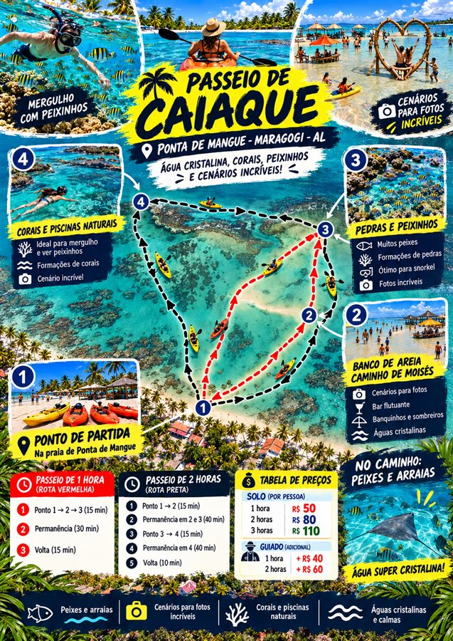

PONTA DE MANGUE • MARAGOGI • ALAGOAS
O MAR TEM OUTRO
RITMO AQUI.
Caiaque, piscinas naturais e o azul mais bonito de Ponta de Mangue. Você escolhe a rota. A gente cuida do momento.
01
ÁGUAS CALMAS
PARA VIVER DEVAGAR
DESÇA PARA EXPLORAR
NÁUTICA ANJOS
PONTA DE MANGUE
NÃO É SÓ DESTINO.
É MEMÓRIA.
Da areia branca às piscinas naturais, cada parada foi pensada para você remar, mergulhar, fotografar e sentir Maragogi do jeito certo.
01ponto de partida
∞momentos no azul
ESCOLHA SEU MOMENTO
REMAR. PARAR.
SE SURPREENDER.
Uma experiência leve, com cenários que parecem ter saído de um cartão-postal.
CAIAQUE
O mar no seu ritmo.
CENÁRIOS
Fotos que contam a viagem inteira.

DO SEU JEITO
ESCOLHA A
SUA ROTA.
Toda saída começa em Ponta de Mangue. Confirme o melhor horário conforme a maré e viva o percurso no seu tempo.
- 01Ponto de partida
Praia de Ponta de Mangue - 02Banco de areia
Parada para fotos e respiro - 03Corais e águas claras
Tempo de observar e mergulhar
TRANSPARENTE E SIMPLES
ESCOLHA O TEMPO.
O MAR FAZ O RESTO.
Valores por pessoa. Consulte disponibilidade e condições pelo WhatsApp.
PASSEIO DE 2 HORAS
R$ 160por pessoaCONFIRME SUA RESERVADO CAIAQUE À PISCINA NATURAL
SEU ÁLBUM COMEÇA
AQUI.


CHEGUE ATÉ NÓS
SEU PONTO DE
PARTIDA.
Estamos em Ponta de Mangue, Maragogi - AL. Veja o ponto exato da Família dos Anjos Náutica no mapa e trace sua rota até nós.
⌖ABRIR LOCALIZAÇÃO EXATA ↗
🛶
🛶
O MAR ESTÁ TE ESPERANDO
VAMOS REMAR
PARA LEMBRAR.
CONFIRME SUA RESERVA ↗O azul continua por aqui.